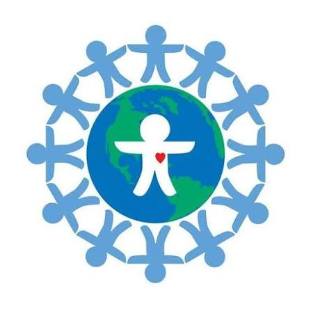
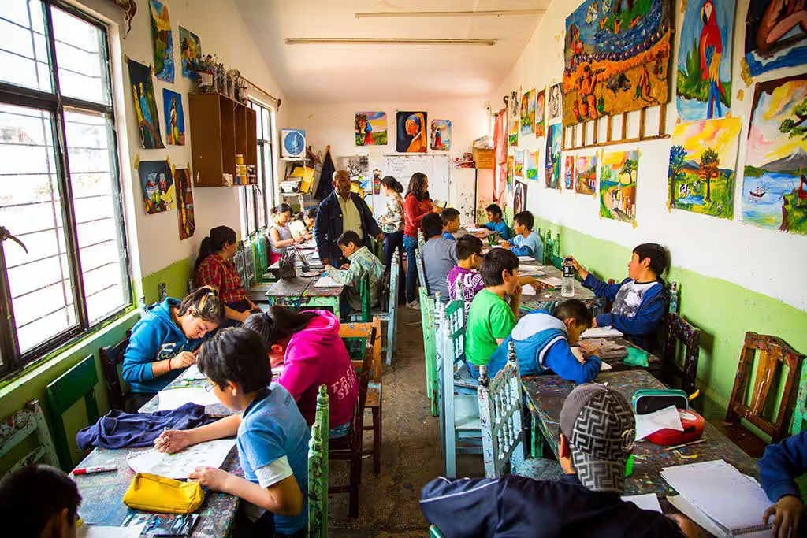
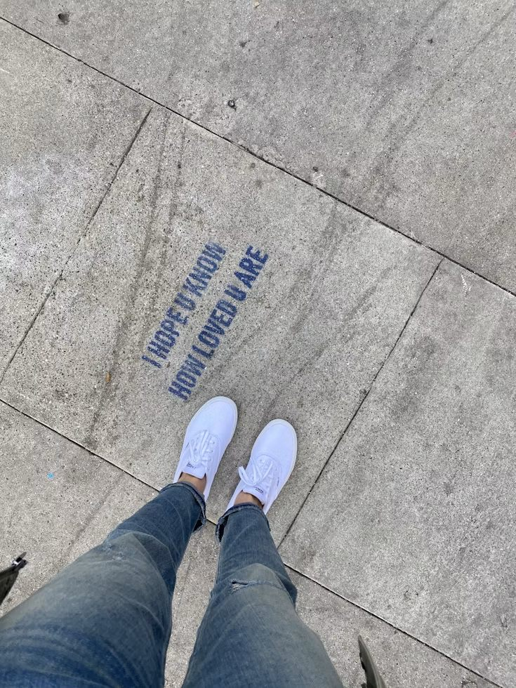
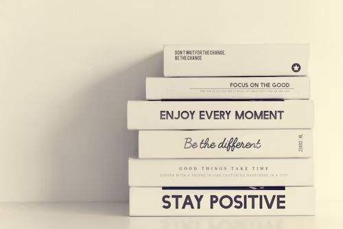
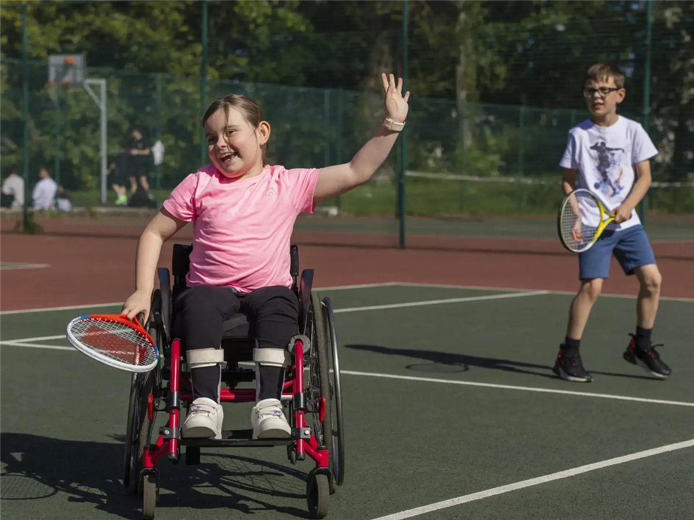
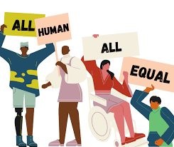
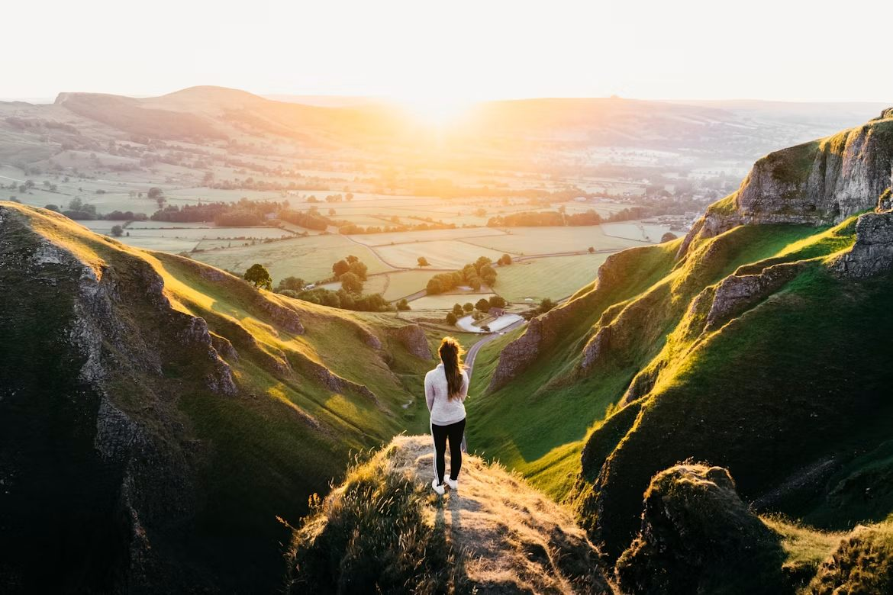

News Page Please can you place this on the News page and what is currently there on the Events page. Thanks a lot
World Children's Day is on the 20 November each year. This year is the 37th anniversary of the adoption of the UN Convention on the Rights of the Child – a special moment where governments around the world (including Australia) agreed on 54 different rights that every child under 18 years old should have to live a safe, healthy and happy life.
The Convention on the Rights of the Child is based on what a child needs to grow, learn and live a safe and healthy life with dignity and respect. It is for every child, regardless of gender, religion, culture, abilities or ethnicity. Is this so for even almost every child in Australia?
As you can see on the Children’s Rights page of this website, in 2024 amendments were made responding to impacts of our ever changing world on children including:
3. be listened to and have their opinions count in all decisions affecting them, thus recognising their fundamental right to participate in shaping the communities they live in,
6. be protected from all forms of violence (physical, psychological, and sexual) in all settings, including the home
5.benefit from a safe and empowering experience in the fast-evolving digital environment in which they can conserve their agency and be digitally literate to navigate securely,
8. access child-friendly systems of justice and commensurate remedies when their rights are violated
On World Children’s Day, we’re standing up for every child’s right to grow up healthy in body and mind. All children have the right to feel and be healthy – not just physically, but mentally and emotionally and in every part of who they are.
A healthy childhood starts with the basics: nutritious food, clean water, healthcare, safety and support. But it also means so much more: love, connection and the chance to feel safe, heard and cared for. When children have all of this, they don’t just survive, they grow, dream and thrive. Australia is not at war, yet too many children in our country do not have their basic needs met nor do they have the safety, support and respect for who they are, in many cases, enough for them to survive, let alone thrive.

For many years Australia was known as the Lucky Country. Now children are not only victims of violence and terror, they are attacking others of all ages. School truancy, youth depression, youth suicide, and acts of religious and racial discrimination are increasing rapidly and religious discrimination is higher than ever before? Why?In Korczak’s words, “ One should not leave the world as it is.”
Yes, it is difficult for one person to make a difference, but think about when someone helped you when you were in trouble. Did it make a difference? Even small acts of kindness can make a start. Having someone listen to you and take you seriously makes a difference. Standing up for what you believe in makes sure other people know who you are and why you do what you do. Understanding the other not only helps them, it helps you too. To everyone else other than within your neighbourhood or community, you are the other!

Janusz Korczak was only one person but because he saw children as people who have their own ideas and each one can make a difference, he said, “Children are not the people of tomorrow, but people today. They are entitled to be taken seriously. They have a right to be treated by adults with tenderness and respect, as equals. They should be allowed to grow into whoever they were meant to be - The unknown person inside each of them is the hope for the future.”
This one person through his words and actions made a difference to so many young people all over the world and continues to! These words and actions formed the foundation for the Convention on the Rights of the Child.
This day is an important reminder that hope should be a part of your life every day! What do you hope for? What is really important to you?

Believe in yourself and always keep hope in your mind.



So much is changing almost everywhere. No matter where you are, who you are, or how old you are, you have the right to be safe and free to be your true self!
Even when you have been hurt or treated badly just because you are different from whoever has hurt you, it’s not your fault!
There are people who care about you and can help you, and it’s important for you to believe in yourself and have hope that things can get better, and know that you can help make that happen too! Things you do make a difference. Being kind to someone who is sad can make that person feel better, and perhaps that person will learn from you that being kind to someone else will make a difference too!
Find out more about the International Day of Hope here and things you can do here.

“One should not leave the world as it is.” Korczak, J.